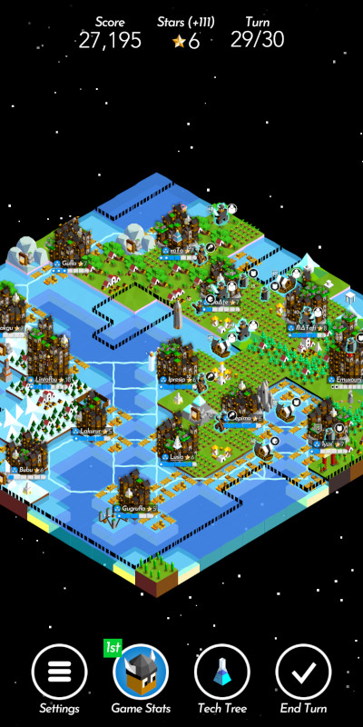

The Battle Of Polytopia
It's possible the unstoppable march of technology will arrive at a point where neural interfaces are the most popular personal computing solution. Silicon-augmented imagination will allow us to dive into other worlds without so much as lifting a finger or indeed, batting an eye! While there are many valid concerns about such a development, the thought of being able to play Polytopia anywhere anytime somehow makes it okay. Well, not really, but this is such a great little game, you should see what I mean by the end of this post.
"The Battle of Polytopia" is a 4X strategy game, originally designed for and released on mobile platforms. Squeezing a full-blown strategy game in a pocket is no mean feat. Polytopia achieves it by simplifying or eliding completely some of the more convoluted trappings of the genre. There is but a single type of resource - somewhat abstract stars. Most factions††Polytopia was originally named 'Super Tribes', and it shows! There are 16 tribes in total, 12 regular and 4 special ones. Regular tribes share the tech tree and differ only in appearance and the starting tech. Special tribes, on the other hand, possess unique technologies, units, buildings and skills, making for very different playing experiences. share a single technology tree with 24 leaves. While there is definitely warfare, there is no diplomacy to speak of. Yet Polytopia retains the level of complexity that engages session after session. It is extremely easy to pick up and start playing, with the help of an occasional context tip. While it is also easy to put down for later - the game seems to be constantly saving its state in the background - there is usually no need. A game in its "perfection" mode is only 30 turns long!
Speaking of modes, there are 3 available in single-player:
- perfection is limited to 30 turns, at the end the tribe with the highest score wins
- domination continues until there is only one tribe left
- creative allows the player to customize their game and play however they like
Creative mode is the newest one, and it enables players to enjoy building their empires without pesky distractions of warfare. And building is done beautifully. Cities are upgraded††Upgraded cities grow both in height and intricacy, even obscuring the world map at times! Many other types of structures have different upgrade levels as well, all beautifully illustrated. by increasing their population, usually through exploiting natural resources. In addition to resources that can be extracted once, there are resource tiles that support various types of structures. Those structures combine with one another to further increase their effect, e.g. there are grasslands that can be cultivated into farms, and then a mill can be placed nearby that increases population for each adjacent farm. It becomes not unlike a puzzle, then, to utilize all available tiles in a most efficient way possible.
The second game mode is for players who thrive on utter and complete dominance over their opponents. This is where base 12††Special tribes introduce additional 22 units, including giant bugs, crustaceans, dragons and a refrigerator wearing skis. units come into play, each with their stats and skill sets. AI is very proficient at operating those units and can pose a stiff challenge on higher difficulty settings. Maximum number of opponents on highest difficulty make for hilariously short games. I would often find myself trapped between mighty tribes, constantly on the defense, only to eventually lose my last city... or grab at a chance to absorb one of the weakened tribes, starting a chain reaction of conquest and glory. And this is just single-player! Polytopia supports multiplayer as well, which I have tried briefly with my partner, but we quickly discovered that virtual clashes had repercussions in the real world.
It is the first "perfection" mode that truly shines, though. An intentionally succinct, self-contained experience, similar to a game of chess. Just like in chess, it is possible to steal the victory at the last possible moment - by leveling up your cities, building monuments or surprise conquest. With tough opponents it can become a game of trench warfare, or a walled-up building race. No two games are never quite the same. Procedural map generation and various paths through the tech tree dictated by the constantly changing environment ensure that. Special tribes with their own units, tech, and skills bring even more variety into the mix.
Low-poly art of Polytopia deserves a special mention. It is vibrant, distinct and looks great both up close and a distance, without making even the busiest world map feel cluttered. As a cool side effect of their aesthetics, various units translate well into paper foldables.
Polytopia is very generous when it comes to the price. Mobile version is free with the 4 regular tribes unlocked, providing a full game experience from the get-go. The rest of tribes can be unlocked via IAP. PC version††Polytopia was released on Steam in 2020 after a change of engine from Adobe AIR to Unity. is around 13 euro and comes with all of the regular tribes unlocked; special tribes can be purchased as DLC.
In addition to being "one more turn! ...aaand it's 3am" kind of 4x strategy, Polytopia is perfect for those little time slots scattered throughout the day when there's nothing better to do. Why not pick up your phone (or, in the future, concentrate on a shimmering icon in the top left corner of your vision), create a brave new world and lead one of its tribes to greatness?